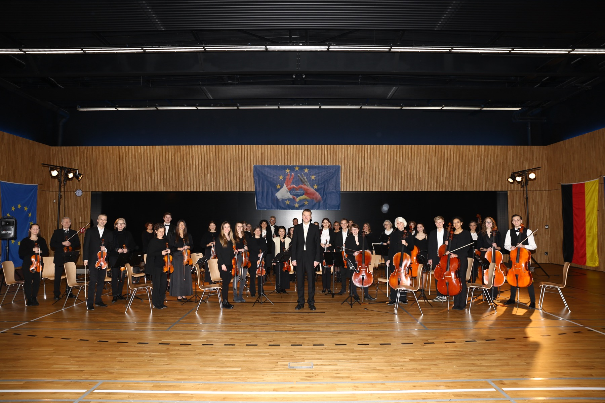

L'ensemble
L'orchestre franco-allemand
La musique, un langage universel, au-delà des frontières. — Musik, eine universelle Sprache, über Grenzen hinweg.
L'ensemble au complet
Cinquante musiciens, trois pays

L'objectif d'une telle structure est de partager ensemble et de façon pérenne le plaisir de jouer d'un instrument dans une ambiance conviviale, et d'encourager une ouverture vers d'autres pays — Allemagne, Pologne… La musique étant un langage universel.
L'orchestre franco-allemand propose divers projets tout au long de l'année : concerts, tournées, partenariats avec d'autres écoles de musique internationales. Ces expériences apportent un enrichissement personnel, relationnel, culturel et musical, et créent des liens d'amitié durables.
L'association OCW (Orchestre de Chambre de Wissembourg) a été fondée en 2013, à l'initiative d'élèves motivés eux-mêmes entourés de professeurs passionnés. Cet ensemble, en partenariat avec l'école de musique de Landau depuis 2021, compte aujourd'hui une cinquantaine de musiciens amateurs et professionnels, de tous âges et de tous horizons, sous la direction de Marc Bender.
Auf Deutsch
Das Ziel einer solchen Struktur ist, gemeinsam und nachhaltig die Freude am Spielen eines Instruments in einer freundlichen Atmosphäre zu teilen und auch die Offenheit gegenüber anderen Ländern (Deutschland, Polen…) zu fördern. Musik ist eine universelle Sprache!
Das deutsch-französische Orchester bietet daher das ganze Jahr über verschiedene Projekte an, wie Konzerte, Tourneen und Partnerschaften mit anderen internationalen Musikschulen.

Direction artistique
Marc Bender
Violoniste formé à Strasbourg, Stuttgart et Londres, aujourd'hui à la Philharmonie de Baden-Baden. Il dirige l'orchestre depuis 2010.
Les musiciens
Les pupitres
Cordes, vents et percussions : l'orchestre réunit une cinquantaine d'instrumentistes français et allemands. La liste nominative des musiciens par pupitre est en cours de constitution et sera publiée ici.


L'association
Une association au service de la formation musicale
L'association Orchestre de Chambre de Wissembourg a été créée en décembre 2013 pour poursuivre le développement de la formation musicale. Elle est inscrite au registre du Tribunal d'instance de Haguenau.
Le bureau
- Marc BenderDirecteur musical
- William HegePrésident
- Adeline HirschlerTrésorière
- Gabrièle HegeSecrétaire

Vous jouez d'un instrument ?
L'orchestre accueille chaque saison de nouveaux musiciens, amateurs confirmés comme professionnels, français comme allemands. Écrivez-nous : nous vous indiquerons les prochaines répétitions.